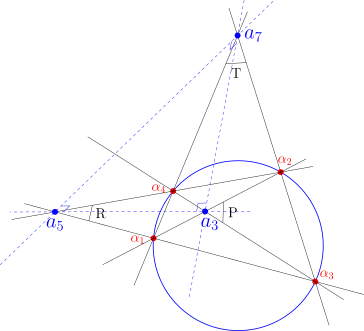
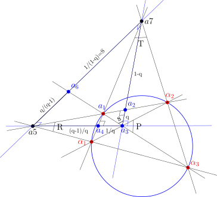

From Cross-Ratio Orbits to SU(3) Invariants in Universal Hyperbolic Geometry
How the quadratic cover f(x) = 4x(1-x) collapses S3 cross-ratio orbits onto Wildberger’s 48/64 locus and links central field components to Lie-algebraic Casimirs.
pure-math
geometry
hyperbolic-geometry
mathematical-physics
Author
John D. Coady
Published
September 5, 2026
Picking up where we left off
This is the third post in an ongoing series exploring the algebra hiding inside a very simple picture: four null points sitting on a conic, and the seven-point figure you get when you triangulate the diagonal triangle they generate.
In Post 1: Reciprocal Parallax Symmetry in UHG, we met the four null points, their self-polar diagonal triangle, and the first hint that its sides carry a rigid, cross-ratio-independent quadrance of exactly 1.
In Post 2: Parallax Diagonal Triangulation, we triangulated that diagonal triangle outward, picked up six outer parallax segments, and found that their quadrances trace out the full six-element anharmonic orbit of a single cross-ratio parameter q.
Both of those posts stayed close to the raw geometry — joins, meets, poles, quadrances. This post is where the payoff shows up: the same six-element orbit, run through one deliberately simple quadratic map, folds down onto a rigid numerical target that Wildberger proved decades ago, and along the way hands us something that looks unmistakably like the invariant structure of \mathfrak{su}(3).
The full write-up, with every derivation carried out in detail, is on Zenodo:
From Cross-Ratio Orbits to SU(3) Invariants in Universal Hyperbolic Geometry John D. Coady, 2026. doi.org/10.5281/zenodo.22398942
This post is the tour.
Two tiers, one cross-ratio
Everything in this series is organized into two tiers, both driven by a single free parameter q \in \mathbb{P}^1(\mathbb{F}) \setminus \{0,1,\infty\} — the cross-ratio of the original four null points.
Tier 2 is the microscopic layer: the six outer parallax quadrances from Post 2, forming the anharmonic S_3 orbit
Six numbers, permuted among themselves by the six elements of S_3, arranged as three complementary pairs.
Tier 1 is the macroscopic layer: the diagonal spreads P, R, T that live on the original four-point quadrangle, satisfying Wildberger’s classical Theorem 44 — the “48/64 theorem”:
PR + RT + TP = 48, \qquad PRT = 64.
The question this post answers: is there a clean, purely algebraic bridge from Tier 2 to Tier 1? It turns out there is, and it’s disarmingly simple.
The quadratic folding map
Pick one representative from each of the three complementary pairs in \mathcal{O}_q — say q_1 = q, q_2 = 1/q, q_3 = 1/(1-q) — and feed each one through
f(x) = 4x(1-x).
If that formula looks familiar, it should: it’s the logistic map at its most chaotic parameter value, r=4. We’re not iterating it here — there’s no dynamics, no orbit of iterates — but it’s worth noting why this particular quadratic shows up. Wildberger’s Theorem 32 (UHG II) gives the quadrance opposite an isosceles pair in terms of the shared quadrance q and spread S:
q_3 = \frac{4(1-S)\,q(1-q)}{(1-Sq)^2}.
Set S=0 — the right-angled special case — and this collapses exactly to q_3 = 4q(1-q). So f isn’t an arbitrary choice; it’s what the Isosceles Triangle theorem hands you for free once you specialize to a right spread.
Define:
R \equiv 4q(1-q), \qquad
T \equiv 4\left(\frac{1}{q}\right)\!\left(1-\frac{1}{q}\right) = -\frac{4(1-q)}{q^2}, \qquad
P \equiv 4\left(\frac{1}{1-q}\right)\!\left(1-\frac{1}{1-q}\right) = -\frac{4q}{(1-q)^2}.
Here’s the key structural fact: f(x) = f(1-x), identically. So it doesn’t matter which member of each complementary pair you started from — f can’t tell q from 1-q, or 1/q from (q-1)/q, or 1/(1-q) from q/(q-1). That single symmetry is what turns a 6-element orbit into a well-defined 3-element set \{P, R, T\}. It’s a genuine 2-to-1 branched algebraic cover, no analysis required — just the involution x \mapsto 1-x acting underneath a quadratic.

Four null points on the conic, their self-polar diagonal triangle \overline{a_3a_5a_7} (classically labeled \overline{efg}), and the diagonal spreads P, R, T.
Landing exactly on 48 and 64
The remarkable part isn’t that f collapses the orbit — it’s where it lands. Multiply the three definitions together and the denominators cancel outright:
using the fact that -q^3 - (1-q)^3 + 1 = 3q(1-q) identically. Both reductions hold for everyq in the domain — not at special points, not approximately, but as exact rational identities.
That means \{P, R, T\}, built purely from the microscopic Tier 2 quadrances, sits exactly on the invariant locus PR+RT+TP=48,\ PRT=64 that Wildberger’s Theorem 44 assigns to the diagonal spreads of the original null quadrangle. The isosceles sub-triangle construction is illustrated below.

The null quadrangle frame with the Tier 1 diagonal spreads P, R, T, each arising from an isosceles sub-triangle configuration via Theorem 32 with S=0.
The SU(3)-flavored central triangle
Tier 2’s orbit does more than fold onto (P,R,T). Back in Post 2, triangulating the diagonal triangle also produced a central triangle\overline{a_2a_4a_6}, built from the auxiliary points of the seven-point frame. Its three side-quadrances, courtesy of the Projective Pythagorean Theorem, are:
The central triangle \overline{a_2a_4a_6} formed by the auxiliary points of the 7-point frame; its side quadrances are the trace-free field components Q_1(q), Q_2(q), Q_3(q).
These three quantities satisfy a trace-free condition, Q_1+Q_2+Q_3\equiv 0 — the same shape as three color charges summing to zero on the Cartan subalgebra of \mathfrak{su}(3). That single constraint is what makes the rest of the structure feel so Lie-algebraic: with e_1=0, only two independent symmetric invariants remain, e_2 and e_3, and those are exactly the quadratic and cubic Casimirs:
where j(q) = \dfrac{256(q^2-q+1)^3}{q^2(q-1)^2} is the classical Klein j-invariant. A rank-2 Lie algebra’s invariant ring is freely generated by exactly two Casimirs — and here, two independent invariants fall directly out of a trace-free triple built from nothing but a cross-ratio and the Projective Pythagorean Theorem. We want to be careful about how far to push this: the geometry is exact and provable; the SU(3) language is offered as structural motivation, not as a physical derivation.
What happens at the boundary
Push q \to 0 and the three orbit representatives scatter: q_1 \to 0, q_2 \to \infty, q_3 \to 1. Individually, that sends R \to 0, P \to 0, and T \to -\infty — but the product PRT doesn’t blink. The identity PRT \equiv 64 is exact for every q in the domain, so the divergence in T and the vanishing of P,R are locked together by construction, not by a coincidence of limits.
Meanwhile C_2(q) \to +\infty and C_3(q) \to -\infty — the Casimirs blow up exactly at the same null-point collisions where the original quadrangle degenerates. It’s a clean picture of boundary behavior with no analysis, no \varepsilon–\delta, and no continuum limit anywhere in sight: just rational functions doing what rational functions do near their poles.
Check it yourself
Everything above is exact rational algebra, which means it’s exactly the kind of thing a computer algebra system can verify in a few lines. Here’s a self-contained sympy script that checks the three central identities from this post — run it yourself and watch nothing get rounded.
Run this and you should see PRT = 64, PR + RT + TP = 48, and Q1 + Q2 + Q3 = 0 fall out symbolically — not approximately, not just at q=2, but as identities holding across the whole domain.
Where this leaves us
Three posts in, the pattern is holding up: start from nothing but four null points and a cross-ratio, and the projective incidence geometry — joins, meets, poles, quadrances, spreads — hands back rigid numerical constants (Wildberger’s 48/64) and a trace-free triple whose invariant theory mirrors a rank-2 Lie algebra, all without ever leaving the world of rational functions over a general field.
Next up in the series: pushing this central triangle further and seeing how much of the SU(3) analogy survives contact with an actual root system.